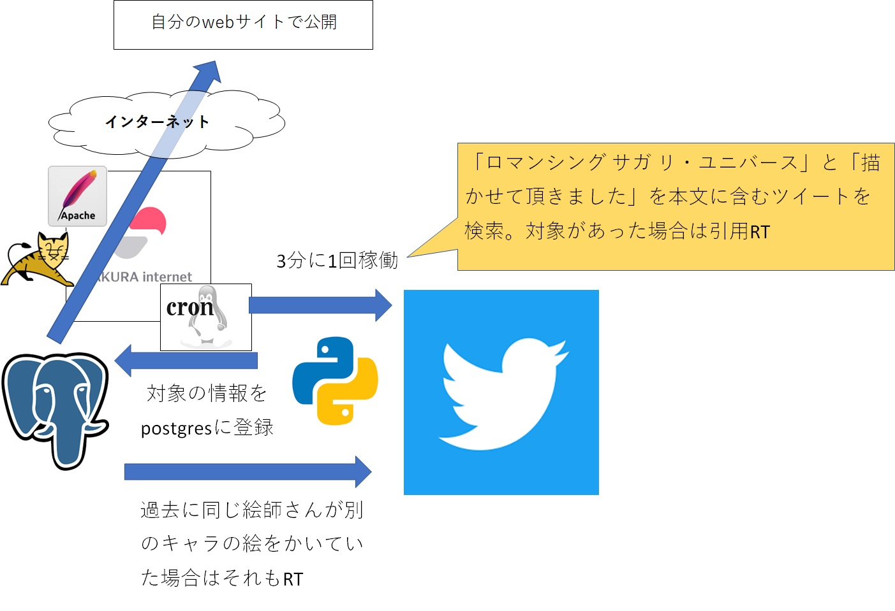

twitterのスクレイピングbot
Tweetホーム > 個人開発したことまとめ > twitterのスクレイピングbot
twitterのスクレイピングbot
ロマサガRSというソシャゲをやってて、新キャラが実装されるたびに絵師さんがこんなツイートしてたりする。
キャラクタは大量にいるし、いつ誰が公開するかもわからないので自動的に情報収集して検索できるようなもの作れないかな？【仕事絵】
— 木野田 永志 (@bittercolors) June 16, 2022
SQUARE ENIX様の「ロマンシング サガ リ・ユニバース」にて、
『SSグレイ』を描かせて頂きました。https://t.co/YoMfUvbRR8#新ロマサガRS#ロマサガRS pic.twitter.com/Z3BCV7bphQ
⇒そうだ！スクレイピングだ！（！？）
作ったもの（実際に稼働したときのツイート）
勝手に拾ってリツイート
今2022/06/16 18:03
— sagamax@サガとレトロゲー (@sagamax__) June 16, 2022
木野田 永志さんの絵#ロマサガRSの絵#ロマサガRShttps://t.co/ahTsGxTHIZ
勝手に自分のサイトに公開
今2022/06/16 18:03
— sagamax@サガとレトロゲー (@sagamax__) June 16, 2022
twitterに公開されたロマサガRSの絵氏さんのツイートを下記リンク先の画面で検索できます。
直前でRTしたツイートも登録済みです。#ロマサガRShttps://t.co/LW0D58Uw9M
勝手にひとつ前の作品を拾ってリツイート
今2022/06/16 18:03
— sagamax@サガとレトロゲー (@sagamax__) June 16, 2022
木野田 永志さんの1つ前の作品はこちら。#ロマサガRShttps://t.co/lcLGaB0lrW
どんな仕組み？

botが勝手に情報収集して勝手にDB登録して勝手に公開してくれる、手間のかからない素敵システム。情報収集してDBに登録する部分はpythonで実装。webサイト部分はJava(jspとservlet)で実装。
ソースコード(python)
Java servlet
JSP
ぶつかった壁とか学んだこととか
timezone関係。以下のようなエラーが発生した。
File "/pythonscheduler.py", line 32, in <module>
schedule.run_pending()
File "/usr/local/lib/python3.10/site-packages/schedule/__init__.py", line 780, in run_pending
default_scheduler.run_pending()
File "/usr/local/lib/python3.10/site-packages/schedule/__init__.py", line 100, in run_pending
self._run_job(job)
File "/usr/local/lib/python3.10/site-packages/schedule/__init__.py", line 172, in _run_job
ret = job.run()
File "/usr/local/lib/python3.10/site-packages/schedule/__init__.py", line 661, in run
ret = self.job_func()
File "/artist_rt/SagaRsPictures.py", line 296, in searchArt
searchKoushikiPic(api)
File "/artist_rt/SagaRsPictures.py", line 38, in searchKoushikiPic
if dt_now_bfr > result.created_at.astimezone(datetime.timezone(datetime.timedelta(hours=DIFF_JST_FROM_UTC))):
TypeError: can't compare offset-naive and offset-aware datetimes
can't compare offset-naive and offset-aware datetimes ？？？何言ってんの？？？状態だったんだけど、どうやらpythonのdatetimeオブジェクト（日時=日付と時刻を扱うオブジェクト）とtimeオブジェクト（時刻を扱うオブジェクト）はnaiveとawareの2種類に分類されるらしい。
ざっくり言うと、
- naive：timezone無しのオブジェクト
- aware：timezone付きのオブジェクト
先に乗せたpythonコードの189行目、今は「datetime.datetime.now(JST)」となっているが、以前は「datetime.datetime.now()」となっていたのでnaiveなオブジェクトだった。
同コードの28行目の「if dt_now_bfr > result.created_at + datetime.timedelta(hours=DIFF_JST_FROM_UTC)」でtwitter apiで取得したツイート時刻(UTCが指定されているのでaware)とdatetime.datetime.now()の10分前（native）を比較しようとしているが、pythonの仕様でawareとnativeは比較できないのでエラーになっていた。ということらしい。
「datetime.datetime.now()」の前に「JST = timezone(timedelta(hours=+9), 'JST')」でJSTのtimezoneを生成し、それをnowの引数に渡す（dt_now = datetime.datetime.now(JST)）ことでawareなオブジェクトにして対処した。
参考
- Python, datetime, pytzでタイムゾーンを設定・取得・変換・削除
- datetime --- 基本的な日付型および時間型
- タイムゾーンのインスタンスを生成する
- Pythonのタイムゾーンの扱い
- Python で Datetime を扱う際に気をつけること
- Python: datetimeで確実に日本時間を取得する方法
- 基本的な日付型および時間型